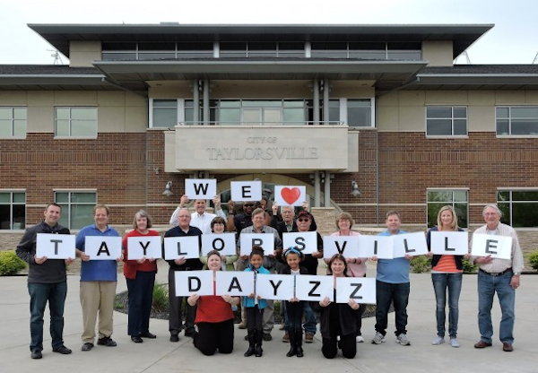

The City of Taylorsville was incorporated on July 1, 1996, through the grassroots efforts of citizens who developed a vision that would provide greater local control of community planning, economic development and municipal service delivery. Today, more than 20 years later, the city continues to build on that foundation while keeping eyes keenly focused on the future.
To that end, the city has rolled out a “20/20 Vision” for the Year 2020 and beyond. That vision focuses on new business and economic growth taking place across the city, as well as development opportunities and projects on the horizon. It includes efforts to bring new business and housing to the city, plans for prime development locations, transportation and land use.
The quality of life in Taylorsville is high with many cultural and recreational activities available within the city or nearby. The city values its reputation as a well-maintained residential and business community. Taylorsville is proud of the stunning scenic backdrop provided by the Wasatch Mountains to the east and Oquirrh Mountains to the west. A river also runs through it; the Jordan River, with its bike and walking trails and beautiful natural habitat, is without question a prize gem of the city.
Residents of Taylorsville place a high value on the natural element of the Jordan River corridor, as well as the open spaces and parks that dot the area. Among them is the large Valley Regional Park, home to the popular Taylorsville Dayzz, the city’s annual summer celebration that draws thousands of people each year for carnival rides, a parade, entertainment and fireworks. A bustling suburb of Utah’s Capital, Taylorsville represents a balance of homes, businesses and thriving commercial areas.
